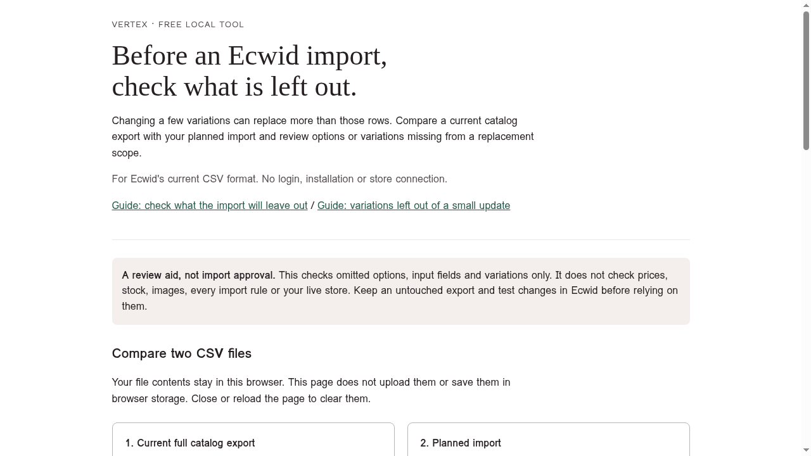
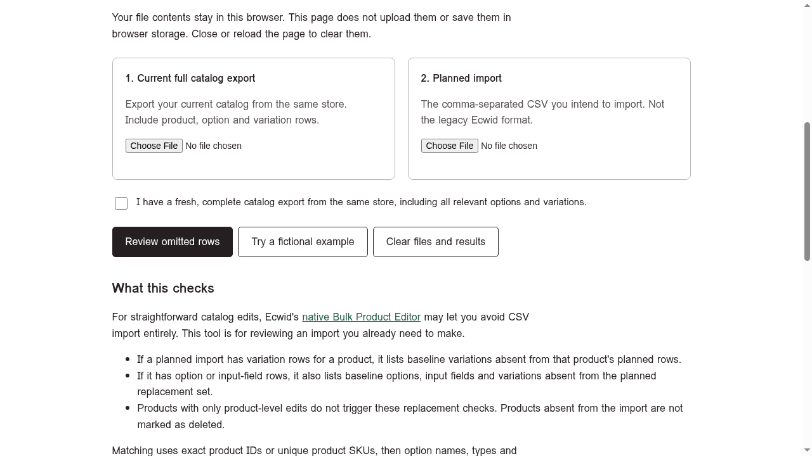
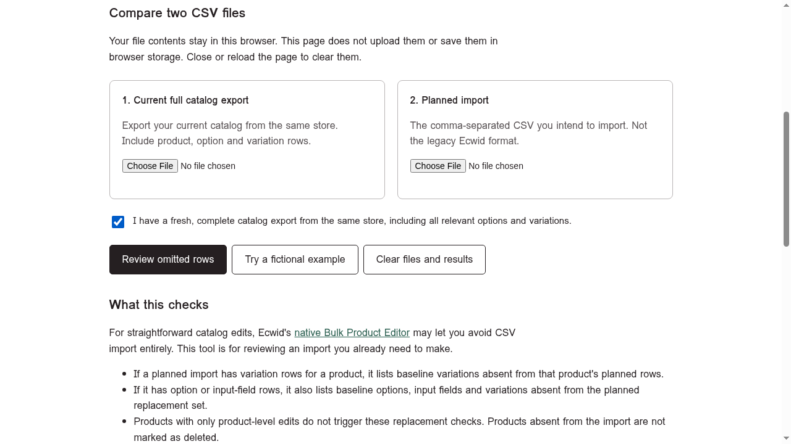
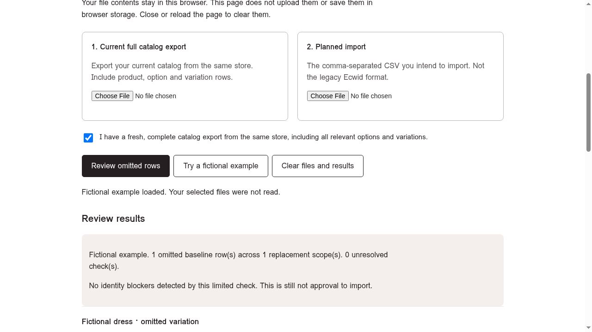
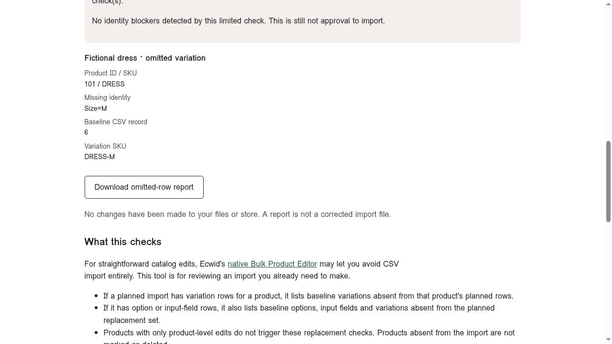

You want to update a few variations, not rebuild the whole product. Before importing a shortened CSV, check what Ecwid will do with variations you left out.
Decide whether you need CSV at all
For straightforward variation edits, Ecwid documents editing a product's variations directly and using its native Bulk Product Editor. Check those options first. This guide is for reviewing an import you already need to make, not a reason to start one.
Review omissions before import
- Keep a fresh full export from the same store. Include the relevant product, option and variation rows. An incomplete baseline can hide omissions. Work on a separate planned import; do not overwrite the baseline.
- Check the planned row types. Ecwid's current variation-import guide says that importing variation data deletes existing variations for that product that are absent from the file, while options remain. Its option/input-field guide describes a broader replacement scope: importing new option or input-field data deletes existing options, input fields and variations absent from the file. These are different scopes, not a rule that every product import deletes everything omitted.
- Open the free Vertex Ecwid Import Scope Check. Try the fictional example first if useful. Select the fresh full catalog export and your planned import. Confirm the baseline is complete only if that is true, then select Review omitted rows.
- Read omissions against your intent. If a variation or option should remain, investigate its absence before importing. If its removal is deliberate, still check the rest of that product's replacement set. A report finding is a prompt to inspect, not automatic proof of an error.
- Stop on identity uncertainty. Matching uses exact product IDs or unique parent-product SKUs, then option identities or variation combinations. It does not match by product name. Changed IDs/SKUs, translated option headers, conflicting matches or intentional option renaming need manual review.
- Check what the report does not cover. It does not validate prices, stock, images, every Ecwid rule or the live store. It does not create a corrected import file. Keep an untouched export and test the intended changes in Ecwid before relying on them.
Fictional example: A product has Size S, M and L variations. Your planned variation import includes only S and L because you were changing those prices. Ecwid's variation-import rule makes the omitted M row worth reviewing. The fact that you did not intend to change M does not make its omission harmless.
30-second walkthrough (fictional data)
These stills use the tool's built-in fictional example. All data is fictional: no store, customer, sales or usage data. Review aid, not import approval.

1. "Before an Ecwid import, check what is left out." Open the free Vertex Ecwid Import Scope Check. No login, installation or store connection.

2. Pick two files: 1. Current full catalog export from the same store. 2. The planned import CSV (current comma-separated format).

3. Tick the confirmation only if true: "I have a fresh, complete catalog export from the same store, including all relevant options and variations." An incomplete baseline can hide omissions.

4. Try the fictional example first. Result: 1 omitted baseline row across 1 replacement scope, 0 unresolved checks. No identity blockers; still not approval to import.

5. Read the omission against your intent: Fictional dress (Product ID/SKU 101 / DRESS), missing identity Size=M, variation SKU DRESS-M. If M should stay, fix the import file before importing.
Fictional demo data only; the report lists omissions to review and is not a corrected import file; files never leave the browser.
Limits and privacy
The tool uses Ecwid's current comma-separated CSV format, not the legacy format. Each file can be at most 10 MB. Product-only edits do not trigger these option/variation replacement checks, and products absent from the planned import are not marked as deleted. A clean report cannot prove an import is safe.
Files stay in your browser and are not saved in browser storage. Close or reload to clear them. Keep files and report downloads private; do not send store exports or reports containing identifiers to public issues or forums.
Built by Vertex, independent of Ecwid and Lightspeed. This is a free review aid, not import approval.
This guide is grounded in Ecwid's current official documentation and the live tool, not a community discussion.
Sources checked October 20, 2026: